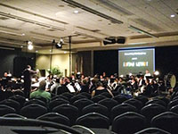
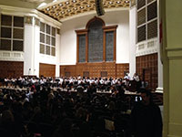
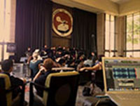

James & James Sound Recorders - Various Concert Recordings
Mostly Kosher
The Chaffey Foundation - Scholarship Telethon
South Hills High School Jazz Band featuring Wayne Bergeron and
Eric Marienthal
Temescal Canyon High School Band
Rancho Starbuck Intermediate
Redlands East Valley High School - SCSBOA Regional
Band & Orchestra Festival
Mt San Antonio College Jazz Ensemble
La Sierra High School Jazz Band
Edison High School Band
Tim Gill All-Stars
Andrew Park - piano
Daniel Wiley - composer
Black Lotus - Live
Marie Sato - Percussion
Dhiren Panikker - Piano
Tony Soto - Percussion
Juan Gallegos - Clarinet
David Lopez - Clarinet
Esther Li - Composer
Byron Panopio - Trumpet
Brian Mantz - Trumpet
Roberto Ortiz - Baritone
Amy Merrill - Soprano
Tim Gill - Trumpet
Jennifer Smith - Soprano
Jacqueline Dodd - Mezzo Soprano
Dzidzofe Avouglan - Vocalist
Natalie Muus - Piano
Nick Schaadt - Bass
Kevin Garnica - Piano
Rachel Purcell - Harp
Kyoko Kamei - Percussion
Jimmy Tran - Composer
Bryan Lackey - Trumpet
Carlos Villa - Trumpet
Susan Willmering - Percussion
Featured Project
Andrea Miller
Andrea Miller's debut album under M and M Productions is just about finished. Produced by Julian Morgan and David Cochrane, this is an album you are definitely going to want to check out. Nothing was held back in the making of this album utilizing East West Studios and Ocean Way Studios as well as David Cochrane's arsenal of songwriting abilities. For more information check out M and M Productions.
Projects
March 6, 2014 - Moreno Valley Wind Symphony
¡Ritmo Latino! Concert - An outstanding performance of eight latin-based works including "Amparito Roca", "La Fiesta Mexicana", "Cuban Overture" and others.
March 1, 2014 - San Bernardino County Honor Orchestra Concert

Congratulations to the 200+ students who participated in the San Bernardino County Honor Orchestras Concert. Three ensembles performed (elementary, junior high/middle school, and high school). It is great to see how musicianship progresses as the students become more experienced.
February 2014 - Telefunken Mixing Competition
December 5, 2013 - Moreno Valley Wind Symphony
Happy Holidays to You Concert - An excellent performance of classic holiday compositions.
December 2014 - Telefunken Mixing Competition
November 19, 2013 - RCC Symphony Orchestra
A well played performance featuring works by Beethoven, Prokofiev, Gershwin, and Tchaikovsky
October 20, 2013 - RCC and The Pacific Brass Ensemble
An entire concert dedicated to film music! All three groups on stage provided awesome performances.
July 1, 2013 - Sounds of Cypress Orchestra
Tracked a few selections for consideration for the orchestra's website and other advertising media
June 6, 2013 - Moreno Valley Wind Symphony
Home of the Brave Concert - A powerful and highly patriotic tribute to America's men and women in uniform. Features guest vocalist Robbie Britt.
May 19, 2013 - King Karl King Honor Band
Congratulations to all the 7th, 8th, and 9th graders who performed with the Tribute to King Karl King Honor Band at RCC. This group played with a mature sound and good balance. Also, the RCC Wind Ensemble completed a moving performance of Copland's Lincoln Portrait narrated by Dr. Wolde Ab Isaac
May 11, 2013 - RCC Jazz Festival

A full day of performances at the RCC Jazz Festival. Starting at 8:00 am (jazz musicians aren't supposed to be up that early), all the way through 6:30 pm. 19 of the 84 bands participating in the festival went through the Bradshaw Center where I was stationed. After completing my recording duties, I caught the last few songs at Landis Auditorium with the RCC Night Band featuring guest artist Bob McChesney. It's not everyday you get to see a trombonist soloing over "Cherokee!" Congratulations to all of the bands that performed for a day filled with music.
March 24, 2013 - Webb Schools Chamber Music Concert
Webb Schools' Music Department performed to a packed house on March 24, 2013. The program included a wide variety of ensembles from instrumental chamber ensembles, solos, and a choir singing from the second floor perimeter of the hall.